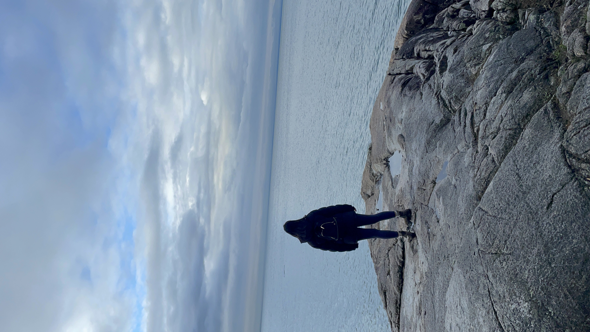

More about Me
Poetry
Inspired by my grandfather's recital of various Iranian poems, I began writing poetry at the age of 14 as a way to better process my emotions by communicating my thoughts and ideas to the world. I have previously published two poems with the Young Writers of Canada Association and continue to spend my free time writing poetry.
Feel free to check out my published works here.
Piano
I have been playing piano ever since I was four years old. I have dabbled in various genres ranging from classic music to traditional Iranian folk songs. I have also received my level 8 RCM (Royal Conservatory of Music) Certificiation. In my spare time, I enjoy singing and playing my favorite tunes for family and friends.
Activities
I enjoy spending my free time being active. I play tennis with my sister on a weekly basis and we often explore Vancouver by going on hikes and checking out new trails. I also enjoy pilates and yoga workouts that help me ground myself when the weather isn't looking too great.
